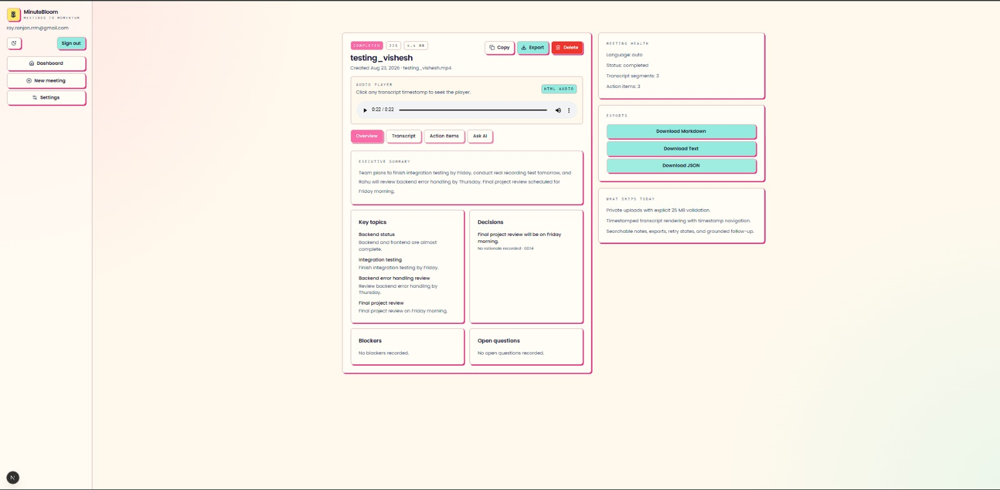
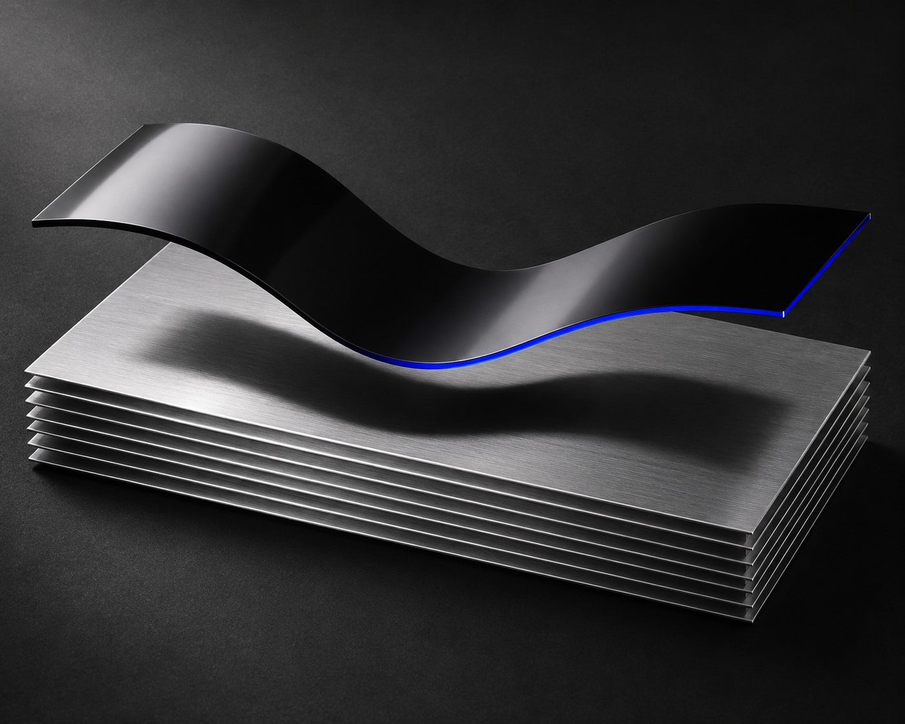
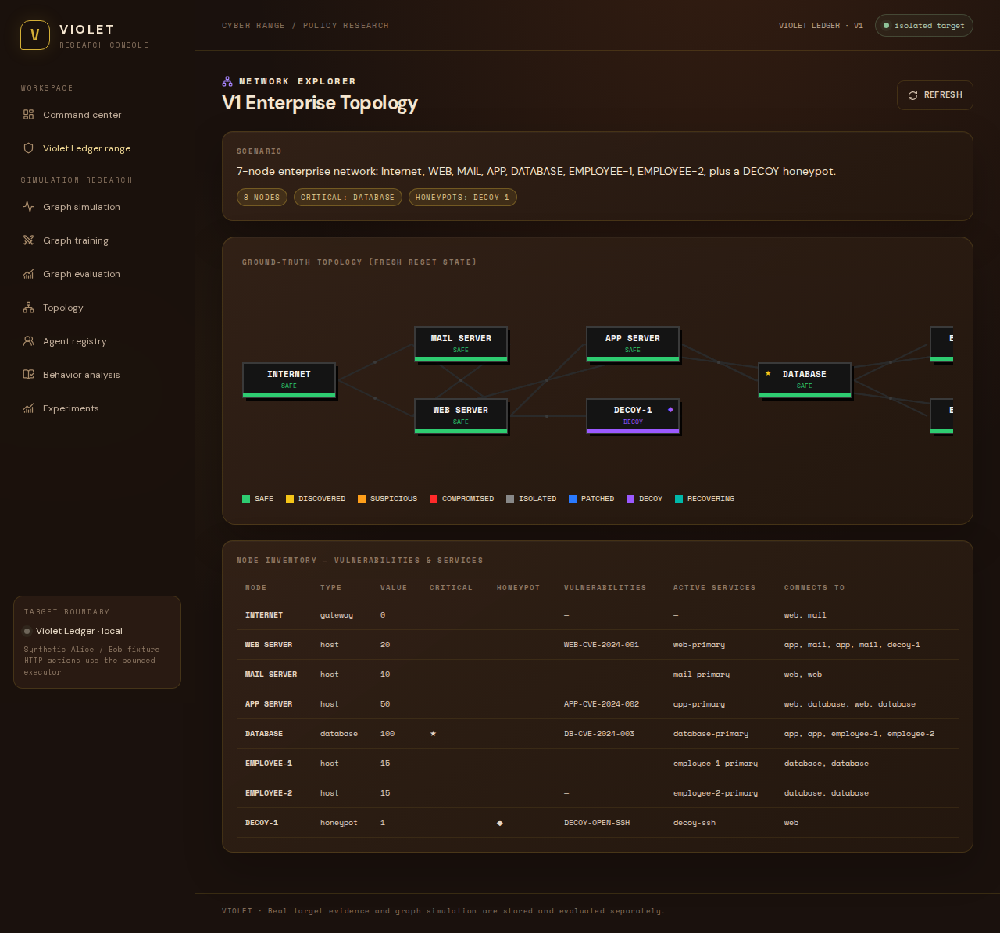

Meeting intelligence
MinuteBloom AI
Turns recordings into timestamped transcripts, decisions, and editable action items.
Explore MinuteBloom@R1ZZABH
I’m Rishabh. I build security tools, study how attacker and defender agents learn, and prototype AI products.
Explore the work
Security operations
A security operations lab that takes an alert from raw telemetry to a scored incident an analyst can investigate.
Explore SignalForgeEvents from the isolated Docker range enter the FastAPI intake pipeline.
Rules weigh evidence such as reputation, behavior, and asset context on a 100-point risk scale.
The operator console shows the score, mapped MITRE ATT&CK techniques, and a timeline of the incident.

Adversarial learning
How do attackers and defenders adapt when both can learn?
VIOLET trains separate red and blue reinforcement learning policies in an isolated SQL injection lab. Saved episodes let you replay their decisions and inspect what actually happened.
Explore VIOLET
Meeting intelligence
Turns recordings into timestamped transcripts, decisions, and editable action items.
Explore MinuteBloomMusic discovery case study
What if you could choose how far your recommendations stray from what you already love?
Read the case study